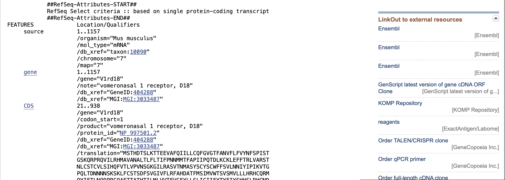

Exploring DNA Sequencing and Analysis
Contents
Exploring DNA Sequencing and Analysis#
The preservation, retrieval, and interpretation of genetic instructions are fundamental for the existence and functionality of living cells. These instructions play a crucial role in the formation and upkeep of living organisms. It is well-established that genetic data is housed within the deoxyribonucleic acid (DNA) present in all living organisms.
DNA is a discrete, linear code ubiquitously present in most of the cells within an organism, consisting of a string of characters drawn from a set of four options.
These characters are:
A - Adenine
C - Cytosine
G - Guanine
T - Thymine
They stand for the first letters with the four nucleotides used to construct DNA.
Each unique three character sequence of nucleotides, sometimes called a nucleotide triplet, corresponds to one amino acid. The sequence of amino acids is unique for each type of protein and all proteins are built from the same set of just 20 amino acids for all living things
Protein molecules dominate the behaviour of the cell serving as structural supports, chemical catalysts, molecular motors.
Central Dogma of Molecular Biology#
DNA serves as a master template for the production of all cellular proteins and other molecules, and it is responsible for controlling the cell’s growth and reproduction.
The genetic code embedded in the DNA sequence is read in groups of three nucleotides, or codons, which code for specific amino acids. These amino acids are then linked in a particular order to form a protein molecule.
Errors or mutations in the DNA sequence can significantly affect the organism, leading to genetic diseases, developmental disorders, or even cancer. However, some modifications can also provide a selective advantage and contribute to evolution by providing new traits that help an organism adapt to changing environmental conditions.
Task Description#
Task 1: Downloading DNA Strand as a Text File
Description: Download the DNA strand from a publicly available web-based repository of DNA sequences.
Subtasks:
Identify the appropriate repository for downloading the DNA strand. Locate the DNA sequence of interest. Download the DNA sequence in the form of a text file.
Task 2: DNA Translation
Description: Write code to translate the DNA sequence to a sequence of amino acids using the genetic code.
Subtasks:
Understand the genetic code and the process of DNA translation. Write a code that converts the DNA sequence to its corresponding amino acid sequence. Ensure the code works correctly for various DNA sequences.
Task 3: Checking the Solution
Description: Download the amino acid sequence and check whether it matches with the expected sequence.
Subtasks:
Identify a publicly available web-based repository for downloading amino acid sequences. Locate the amino acid sequence corresponding to the downloaded DNA sequence. Download the amino acid sequence. Compare the translated amino acid sequence with the downloaded one to confirm the correctness of the code.
Two files are downloaded from the National Centre for Biotechnology Information (NCBI), including a DNA strand and its corresponding protein sequence of amino acids translated from the DNA.
import os
relative_path = './'
dna_file_path = os.path.join(relative_path,'dna_seq1.txt')
protein_file_path = os.path.join(relative_path,'protein_seq1.txt')
Subsequently, the program proceeds to read the files.
dna_file = open(dna_file_path,"r")
dna_seq = dna_file.read()
dna_seq
'GGTCAGAAAAAGCCCTCTCCATGTCTACTCACGATACATCCCTGAAAACCACTGAGGAAGTGGCTTTTCA\nGATCATCTTGCTTTGCCAGTTTGGGGTTGGGACTTTTGCCAATGTATTTCTCTTTGTCTATAATTTCTCT\nCCAATCTCGACTGGTTCTAAACAGAGGCCCAGACAAGTGATTTTAAGACACATGGCTGTGGCCAATGCCT\nTAACTCTCTTCCTCACTATATTTCCAAACAACATGATGACTTTTGCTCCAATTATTCCTCAAACTGACCT\nCAAATGTAAATTAGAATTCTTCACTCGCCTCGTGGCAAGAAGCACAAACTTGTGTTCAACTTGTGTTCTG\nAGTATCCATCAGTTTGTCACACTTGTTCCTGTTAATTCAGGTAAAGGAATACTCAGAGCAAGTGTCACAA\nACATGGCAAGTTATTCTTGTTACAGTTGTTGGTTCTTCAGTGTCTTAAATAACATCTACATTCCAATTAA\nGGTCACTGGTCCACAGTTAACAGACAATAACAATAACTCTAAAAGCAAGTTGTTCTGTTCCACTTCTGAT\nTTCAGTGTAGGCATTGTCTTCTTGAGGTTTGCCCATGATGCCACATTCATGAGCATCATGGTCTGGACCA\nGTGTCTCCATGGTACTTCTCCTCCATAGACATTGTCAGAGAATGCAGTACATATTCACTCTCAATCAGGA\nCCCCAGGGGCCAAGCAGAGACCACAGCAACCCATACTATCCTGATGCTGGTAGTCACATTTGTTGGCTTT\nTATCTTCTAAGTCTTATTTGTATCATCTTTTACACCTATTTTATATATTCTCATCATTCCCTGAGGCATT\nGCAATGACATTTTGGTTTCGGGTTTCCCTACAATTTCTCCTTTACTGTTGACCTTCAGAGACCCTAAGGG\nTCCTTGTTCTGTGTTCTTCAACTGTTGAAAGCCAGAGTCACTAAAAATGCCAAACACAGAAGACAGCTTT\nGCTAATACCATTAAATACTTTATTCCATAAATATGTTTTTAAAAGCTTGTATGAACAAGGTATGGTGCTC\nACTGCTATACTTATAAAAGAGTAAGGTTATAATCACTTGTTGATATGAAAAGATTTCTGGTTGGAATCTG\nATTGAAACAGTGAGTTATTCACCACCCTCCATTCTCT'
The file under consideration contains the \n character, as a result of copying and pasting text from a web browser to a text editor.
This character effects the way the string gets printed.
print(dna_seq)
GGTCAGAAAAAGCCCTCTCCATGTCTACTCACGATACATCCCTGAAAACCACTGAGGAAGTGGCTTTTCA
GATCATCTTGCTTTGCCAGTTTGGGGTTGGGACTTTTGCCAATGTATTTCTCTTTGTCTATAATTTCTCT
CCAATCTCGACTGGTTCTAAACAGAGGCCCAGACAAGTGATTTTAAGACACATGGCTGTGGCCAATGCCT
TAACTCTCTTCCTCACTATATTTCCAAACAACATGATGACTTTTGCTCCAATTATTCCTCAAACTGACCT
CAAATGTAAATTAGAATTCTTCACTCGCCTCGTGGCAAGAAGCACAAACTTGTGTTCAACTTGTGTTCTG
AGTATCCATCAGTTTGTCACACTTGTTCCTGTTAATTCAGGTAAAGGAATACTCAGAGCAAGTGTCACAA
ACATGGCAAGTTATTCTTGTTACAGTTGTTGGTTCTTCAGTGTCTTAAATAACATCTACATTCCAATTAA
GGTCACTGGTCCACAGTTAACAGACAATAACAATAACTCTAAAAGCAAGTTGTTCTGTTCCACTTCTGAT
TTCAGTGTAGGCATTGTCTTCTTGAGGTTTGCCCATGATGCCACATTCATGAGCATCATGGTCTGGACCA
GTGTCTCCATGGTACTTCTCCTCCATAGACATTGTCAGAGAATGCAGTACATATTCACTCTCAATCAGGA
CCCCAGGGGCCAAGCAGAGACCACAGCAACCCATACTATCCTGATGCTGGTAGTCACATTTGTTGGCTTT
TATCTTCTAAGTCTTATTTGTATCATCTTTTACACCTATTTTATATATTCTCATCATTCCCTGAGGCATT
GCAATGACATTTTGGTTTCGGGTTTCCCTACAATTTCTCCTTTACTGTTGACCTTCAGAGACCCTAAGGG
TCCTTGTTCTGTGTTCTTCAACTGTTGAAAGCCAGAGTCACTAAAAATGCCAAACACAGAAGACAGCTTT
GCTAATACCATTAAATACTTTATTCCATAAATATGTTTTTAAAAGCTTGTATGAACAAGGTATGGTGCTC
ACTGCTATACTTATAAAAGAGTAAGGTTATAATCACTTGTTGATATGAAAAGATTTCTGGTTGGAATCTG
ATTGAAACAGTGAGTTATTCACCACCCTCCATTCTCT
To replace the newline character, the .replace() method can be used with two arguments. The first argument is the substring to be replaced and the second argument is the substring to replace the first argument.
The method replaces every occurrence of the first argument with the second argument. Since strings are immutable, the replace method returns a new string which must be assigned to a new variable.
dna_seq = dna_seq.replace("\n","")
dna_seq = dna_seq.replace("\r","")
print(dna_seq)
GGTCAGAAAAAGCCCTCTCCATGTCTACTCACGATACATCCCTGAAAACCACTGAGGAAGTGGCTTTTCAGATCATCTTGCTTTGCCAGTTTGGGGTTGGGACTTTTGCCAATGTATTTCTCTTTGTCTATAATTTCTCTCCAATCTCGACTGGTTCTAAACAGAGGCCCAGACAAGTGATTTTAAGACACATGGCTGTGGCCAATGCCTTAACTCTCTTCCTCACTATATTTCCAAACAACATGATGACTTTTGCTCCAATTATTCCTCAAACTGACCTCAAATGTAAATTAGAATTCTTCACTCGCCTCGTGGCAAGAAGCACAAACTTGTGTTCAACTTGTGTTCTGAGTATCCATCAGTTTGTCACACTTGTTCCTGTTAATTCAGGTAAAGGAATACTCAGAGCAAGTGTCACAAACATGGCAAGTTATTCTTGTTACAGTTGTTGGTTCTTCAGTGTCTTAAATAACATCTACATTCCAATTAAGGTCACTGGTCCACAGTTAACAGACAATAACAATAACTCTAAAAGCAAGTTGTTCTGTTCCACTTCTGATTTCAGTGTAGGCATTGTCTTCTTGAGGTTTGCCCATGATGCCACATTCATGAGCATCATGGTCTGGACCAGTGTCTCCATGGTACTTCTCCTCCATAGACATTGTCAGAGAATGCAGTACATATTCACTCTCAATCAGGACCCCAGGGGCCAAGCAGAGACCACAGCAACCCATACTATCCTGATGCTGGTAGTCACATTTGTTGGCTTTTATCTTCTAAGTCTTATTTGTATCATCTTTTACACCTATTTTATATATTCTCATCATTCCCTGAGGCATTGCAATGACATTTTGGTTTCGGGTTTCCCTACAATTTCTCCTTTACTGTTGACCTTCAGAGACCCTAAGGGTCCTTGTTCTGTGTTCTTCAACTGTTGAAAGCCAGAGTCACTAAAAATGCCAAACACAGAAGACAGCTTTGCTAATACCATTAAATACTTTATTCCATAAATATGTTTTTAAAAGCTTGTATGAACAAGGTATGGTGCTCACTGCTATACTTATAAAAGAGTAAGGTTATAATCACTTGTTGATATGAAAAGATTTCTGGTTGGAATCTGATTGAAACAGTGAGTTATTCACCACCCTCCATTCTCT
The process of translating the code into its protein sequence involves a table lookup operation.
In this case study, a dictionary object is utilized to aid in the translation process. The keys of the dictionary are strings, each consisting of three letters selected from a four-letter alphabet, while the value of each key is a string consisting of a single character, representing the corresponding amino acid.
table = {
'ATA':'I', 'ATC':'I', 'ATT':'I', 'ATG':'M',
'ACA':'T', 'ACC':'T', 'ACG':'T', 'ACT':'T',
'AAC':'N', 'AAT':'N', 'AAA':'K', 'AAG':'K',
'AGC':'S', 'AGT':'S', 'AGA':'R', 'AGG':'R',
'CTA':'L', 'CTC':'L', 'CTG':'L', 'CTT':'L',
'CCA':'P', 'CCC':'P', 'CCG':'P', 'CCT':'P',
'CAC':'H', 'CAT':'H', 'CAA':'Q', 'CAG':'Q',
'CGA':'R', 'CGC':'R', 'CGG':'R', 'CGT':'R',
'GTA':'V', 'GTC':'V', 'GTG':'V', 'GTT':'V',
'GCA':'A', 'GCC':'A', 'GCG':'A', 'GCT':'A',
'GAC':'D', 'GAT':'D', 'GAA':'E', 'GAG':'E',
'GGA':'G', 'GGC':'G', 'GGG':'G', 'GGT':'G',
'TCA':'S', 'TCC':'S', 'TCG':'S', 'TCT':'S',
'TTC':'F', 'TTT':'F', 'TTA':'L', 'TTG':'L',
'TAC':'Y', 'TAT':'Y', 'TAA':'_', 'TAG':'_',
'TGC':'C', 'TGT':'C', 'TGA':'_', 'TGG':'W'
}
To verify whether the length of the DNA sequence is divisible by 3, the code must utilize the modulus operator with the value 3.
In the event that the length is not divisible by 3, the code should discard the last one or two nucleotides, since they will not correspond to a complete codon.
(len(dna_seq) % 3) == 0
False
The code snippet below iterates through the DNA sequence dna_seq starting from index 20 and icrements the index by 3 in each step, until reaching index 937 (inclusive).
For each set of three consecutive nucleotides in the DNA sequence, it looks up the corresponding amino acid using the table dictionary. If the amino acid is not a stop codon (represented by _), the amino acid is appended to the variable amino_string.
By the end of the loop, the amino_string will contain the amino acid sequences translated from the DNA sequences, excluding any stop codons.
Note
The code assumes the existence of the table dictionary, which maps the codons to their corresponding amino acids. Without the definition of the dictionary, the code will raise a NameError.
amino_string = ""
for ind in range(20,938,3):
codon = dna_seq[ind:ind+3]
amino = table[codon]
if amino != "_":
amino_string = amino_string + amino
amino_string
'MSTHDTSLKTTEEVAFQIILLCQFGVGTFANVFLFVYNFSPISTGSKQRPRQVILRHMAVANALTLFLTIFPNNMMTFAPIIPQTDLKCKLEFFTRLVARSTNLCSTCVLSIHQFVTLVPVNSGKGILRASVTNMASYSCYSCWFFSVLNNIYIPIKVTGPQLTDNNNNSKSKLFCSTSDFSVGIVFLRFAHDATFMSIMVWTSVSMVLLLHRHCQRMQYIFTLNQDPRGQAETTATHTILMLVVTFVGFYLLSLICIIFYTYFIYSHHSLRHCNDILVSGFPTISPLLLTFRDPKGPCSVFFNC'
The following code reads in the protein sequence from the file that contains the translated amino acid sequence, removes any newline chracters \n from the sequence and prints the cleaned protein sequence.
The last line of code checks whether the variable amino_string is equal to the cleaned protein sequence protein_seq.
protein_file = open(protein_file_path,'r')
protein_seq = protein_file.read()
protein_seq = protein_seq.replace("\n","")
print(protein_seq)
MSTHDTSLKTTEEVAFQIILLCQFGVGTFANVFLFVYNFSPISTGSKQRPRQVILRHMAVANALTLFLTIFPNNMMTFAPIIPQTDLKCKLEFFTRLVARSTNLCSTCVLSIHQFVTLVPVNSGKGILRASVTNMASYSCYSCWFFSVLNNIYIPIKVTGPQLTDNNNNSKSKLFCSTSDFSVGIVFLRFAHDATFMSIMVWTSVSMVLLLHRHCQRMQYIFTLNQDPRGQAETTATHTILMLVVTFVGFYLLSLICIIFYTYFIYSHHSLRHCNDILVSGFPTISPLLLTFRDPKGPCSVFFNC
amino_string == protein_seq
True
Functions#
The function read_sequence reads a text file and removes newline and carriage return characters from the string. It preprocesses the input file to prepare it for subsequent analysis.
def read_sequence(filename):
"""
Reads a file and preprocess its content to remove newline and
carriage return characters.
Input
filename (str) - the name of the file
Returns
out_string (str) - modified output string with newline and
carriage return characters removed
"""
with open(filename,'r') as file:
string_seq = file.read()
string_seq = string_seq.replace("\n","")
string_seq = string_seq.replace("\r","")
# close the file
file.close()
return string_seq
The lookup_table function takes a string of codons as input and returns the corresponding amino acid. It performs a table lookup to map each possible codon to the respective amino acid.
def lookup_table(input_codon):
"""
Translate a given DNA codon into the corresponding amino acid.
Input
input_codon (str) - dna codon
Returns
amino (str) - translated amino-acid
"""
table = {
'ATA':'I', 'ATC':'I', 'ATT':'I', 'ATG':'M',
'ACA':'T', 'ACC':'T', 'ACG':'T', 'ACT':'T',
'AAC':'N', 'AAT':'N', 'AAA':'K', 'AAG':'K',
'AGC':'S', 'AGT':'S', 'AGA':'R', 'AGG':'R',
'CTA':'L', 'CTC':'L', 'CTG':'L', 'CTT':'L',
'CCA':'P', 'CCC':'P', 'CCG':'P', 'CCT':'P',
'CAC':'H', 'CAT':'H', 'CAA':'Q', 'CAG':'Q',
'CGA':'R', 'CGC':'R', 'CGG':'R', 'CGT':'R',
'GTA':'V', 'GTC':'V', 'GTG':'V', 'GTT':'V',
'GCA':'A', 'GCC':'A', 'GCG':'A', 'GCT':'A',
'GAC':'D', 'GAT':'D', 'GAA':'E', 'GAG':'E',
'GGA':'G', 'GGC':'G', 'GGG':'G', 'GGT':'G',
'TCA':'S', 'TCC':'S', 'TCG':'S', 'TCT':'S',
'TTC':'F', 'TTT':'F', 'TTA':'L', 'TTG':'L',
'TAC':'Y', 'TAT':'Y', 'TAA':'_', 'TAG':'_',
'TGC':'C', 'TGT':'C', 'TGA':'_', 'TGG':'W'
}
amino = table[input_codon]
return amino
The translate function takes a string of DNA nucleotides as input and returns the corresponding amino acid sequence. The process involves dividing the DNA sequence into non-overlapping groups of three nucleotides (codons), which are then translated into amino acids using the lookup_table function.
In this context, the NCBI website offers the start codon index and stop codon index for a specific DNA sequence under the name CDS. Notably, the indexing for these sequences begins at 1.
Therefore, the start codon index needs to be reduced by 1 to align with the Python indexing that begins at 0.

def translate(filename):
"""
Translate a specific DNA sequence from the given file into its
corresponding protein sequence.
Input
filename (str) - name of file to be translated
Returns
amino_sequence (str) - translated protein sequence for the given file
"""
dna_seq = read_sequence(filename)
start = int(input("Enter starting position of codon: "))
end = int(input("Enter stopping position of codon: "))
print()
translate_codon = dna_seq[start-1:end]
amino_sequence = ""
for ind in range(0,len(translate_codon),3):
codon = translate_codon[ind:ind+3]
amino = lookup_table(codon)
if amino != "_":
amino_sequence += amino
return amino_sequence
To validate the functionality of the translate function, the returned value from the function is compared with the actual value of the protein sequence.
Before comparison, the protein sequence undergoes modification as a result of being passed through the read_sequence function to ensure uniform preprocessing.
translate(dna_file_path) == read_sequence(protein_file_path)
True
print(translate(dna_file_path))
MSTHDTSLKTTEEVAFQIILLCQFGVGTFANVFLFVYNFSPISTGSKQRPRQVILRHMAVANALTLFLTIFPNNMMTFAPIIPQTDLKCKLEFFTRLVARSTNLCSTCVLSIHQFVTLVPVNSGKGILRASVTNMASYSCYSCWFFSVLNNIYIPIKVTGPQLTDNNNNSKSKLFCSTSDFSVGIVFLRFAHDATFMSIMVWTSVSMVLLLHRHCQRMQYIFTLNQDPRGQAETTATHTILMLVVTFVGFYLLSLICIIFYTYFIYSHHSLRHCNDILVSGFPTISPLLLTFRDPKGPCSVFFNC
print(read_sequence(protein_file_path))
MSTHDTSLKTTEEVAFQIILLCQFGVGTFANVFLFVYNFSPISTGSKQRPRQVILRHMAVANALTLFLTIFPNNMMTFAPIIPQTDLKCKLEFFTRLVARSTNLCSTCVLSIHQFVTLVPVNSGKGILRASVTNMASYSCYSCWFFSVLNNIYIPIKVTGPQLTDNNNNSKSKLFCSTSDFSVGIVFLRFAHDATFMSIMVWTSVSMVLLLHRHCQRMQYIFTLNQDPRGQAETTATHTILMLVVTFVGFYLLSLICIIFYTYFIYSHHSLRHCNDILVSGFPTISPLLLTFRDPKGPCSVFFNC
Conclusion#
This case study presented a comprehensive approach to translating a DNA sequence into it’s corresponding protein sequence using Python.
Three key functions were developed:
The
read_sequencefunction effectively preprocessed the input file, removing newline and carriage return characters to ensure accuracte and consistent data handling.The
lookup_tablefunction utilized a genetic code lookup table (dictionary) to map DNA codons to their respective amino acids, enabling effective translation.The
translatefunction successfully converted the specified DNA codon range into a protein sequence by utilizing the two previous functions.
Through this case study, I gained valuable insights into the translation of genetic information, aligning the NCBI start codon index with Python’s indexing, and ensuring the accurate protein sequence generation.
The implementation of these functions offers a practical solution for DNA-to-Protein Translation, provding a valuable tool for exploring genetic information and its impact on living organisms.